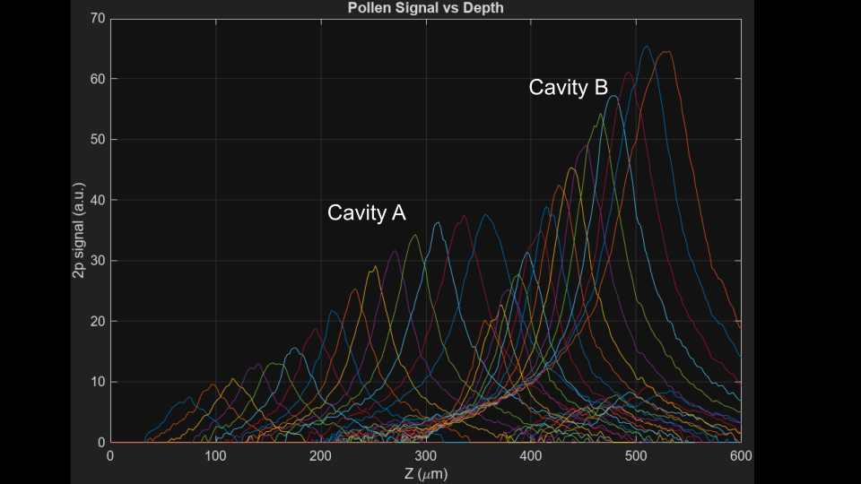
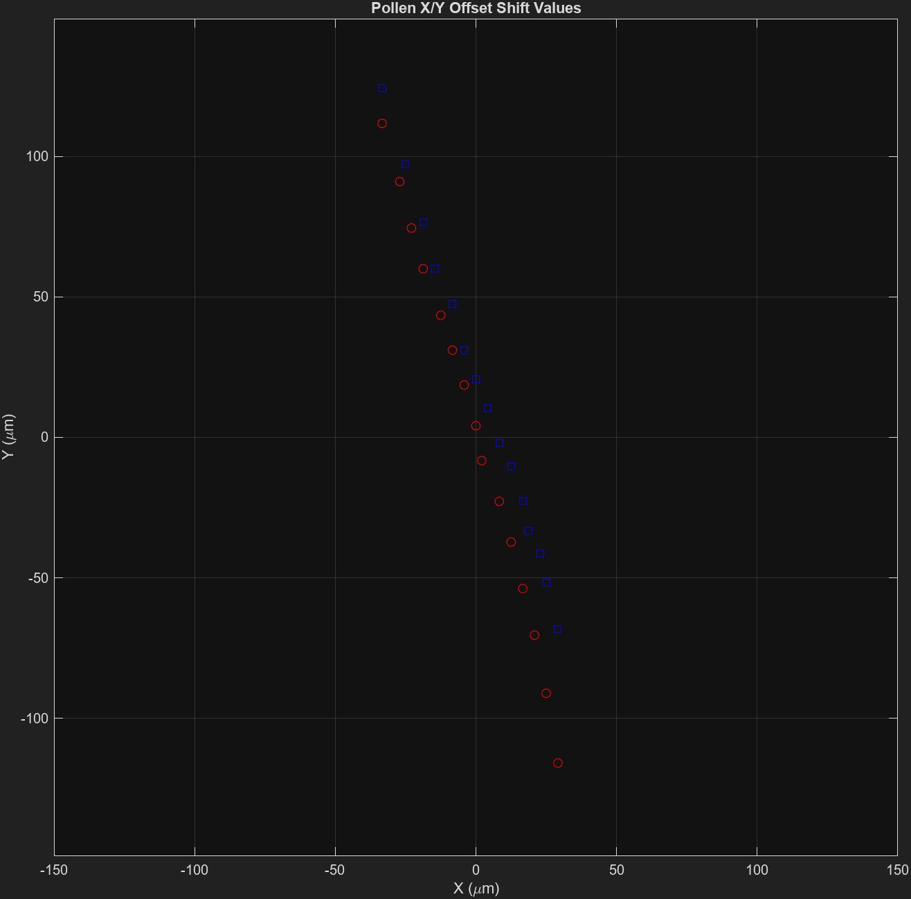
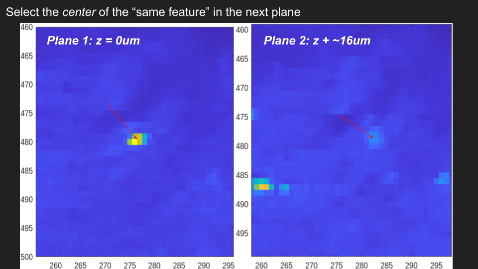

Axial-Offset Correction#
Core function: collatePlanes()
Light beads traveling to our sample need to be temporally distinct relative to our sensor so that the aquisition system knows the origin and subsequent depth of each bead.
The current LBM design incoorperates 2 cavities, hereby named Cavity A and Cavity B. These two cavities are non-overlapping areas where light beads travel. If we plot a sample pollen grain through each z-depth, we can see these cavities manifest:
{kind=link}
We see a bi-modal distribution of Signal (Y) vs z-depth.
This pollen grain is sampled just like a brain would be sampled. We can preview the time-series resulting from this pollen to get a preliminary look at our recording quality:

Before proceeding:
You will need to be in a GUI environment for this step. Calculate offset will show you two images, click the feature that matches in both images.
You will need access to the following calibration files:
pollen_calibration_Z_vs_N.mat
pollen_calibration_x_y_offsets.fig
Setup#
These files hold data used to align each z-plane depth around the same [Y, X] coordinates.
Place these files in the same directory as your caiman_output_plane_N files.
>> help collatePlanes
collatePlanes Analyzes and processes imaging data by extracting and correcting features across multiple planes.
This function analyzes imaging data from a specified directory, applying
various thresholds and corrections based on metadata. It processes neuron
activity data, handles z-plane corrections, and outputs figures representing
neuron distributions along with collated data files.
The function expects the directory to contain 'caiman_output_plane_*.mat' files
with variables related to neuronal activity, and uses provided metadata for
processing parameters. It adjusts parameters dynamically based on the content
of metadata and filters, merges data across imaging planes, and performs
z-plane and field curvature corrections.
First, the [Y, X] offsets (in micron) are used for an initial, dirty axial alignment:
{kind=link}
This alignment should improve the spatial consistency between z-planes, but there is a further refinement step which prompts a graphical interface for z-plane(n) and z-plane(n+1).
Depending on your axial field-of-view, there is likely neuronal contamination between z-planes. We can use this to select a feature, and the same feature in n+1.
{kind=link}
Parameters#
There are no additional parameters outside of the defaults described in Parameters.
Outputs#
.fig files showing neuron distributions in z and radial directions.
A
.matfile: `caiman_collated_output_plane_N with collated and processed imaging data.
Examples#
collatePlanes(‘C:/data/images/’, ‘’, struct(‘r_thr’:0.4, ‘pixel_resolution’:2, ‘min_snr’:1.5, ‘frame_rate’:9.61, ‘fovx’:1200, ‘fovy’:1164), 100); This example processes data from ‘C:/data/images/’, starting at a depth of 100 microns, with specified metadata parameters.
See also load, inputdlg, struct, fullfile, exist
The user will be prompted to select the same feature / region-of-interest / neuron:
After selecting 3 neurons for each plane, you are done with the LBM pipeline.
In the resulting filename you will see the collated minSNR value. This new file
holds a concatenated, centered and thresholded master copy of all neurons, footprints and traces.